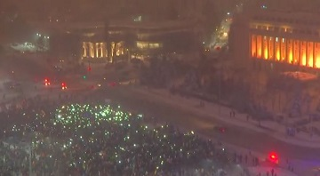

For the ninth straight day, Elena Filip bundled up in her fur-trimmed ski suit and left her Bucharest apartment for Piata Victoriei — Victory Square — outside the government headquarters. She was off to join thousands of other Romanians angry about the government’s recent decision to effectively allow official.
"Anger and Mistrust Fuel Unabated Protests in Romania"
BUCHAREST, Romania — Exactly one week after the largest protests in a quarter of a century rocked Romania, an estimated 70,000 demonstrators filled the square outside the main government building in Bucharest on Sunday evening, determined to show those in power that the crisis was far from over..
"Romanians have braved snowy, weather in a show of opposition"

Not all Romanians are demanding that the country’s government resign. A smaller group of pro-government activists gathered near President Klaus Iohannis’s residence on Wednesday night to express support for lawmakers who supported the weakening of anticorruption measures..
Public Profile
Not all Romanians are demanding that the country’s government resign. A smaller group of pro-government activists gathered near President Klaus Iohannis’s residence on Wednesday night to express support for lawmakers who supported the weakening of anticorruption measures..
Personal Profile
Not all Romanians are demanding that the country’s government resign. A smaller group of pro-government activists gathered near President Klaus Iohannis’s residence on Wednesday night to express support for lawmakers who supported the weakening of anticorruption measures..
Technology Profile
Not all Romanians are demanding that the country’s government resign. A smaller group of pro-government activists gathered near President Klaus Iohannis’s residence on Wednesday night to express support for lawmakers who supported the weakening of anticorruption measures..